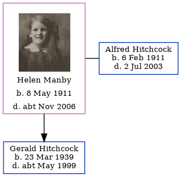

Helen M Hitchcock (née Manby) 1911 - c2006
[ Home ] | [ Calendar ] | [ Surnames Index ] | [ Errors ] | [ Family History ]Helen Manby, the wife of Alfred James Hitchcock (the third cousin once-removed on the father's side of Nigel Horne), was born in West Ham, London, England on 8 May 19111,2,3 and married Alfred (a textile warehouseman with whom she had 1 child, Gerald Anthony) in West Ham, Essex, England around Nov 19354. On 29 Sept 1939, she was living at 20 Hillfoot Road, Romford, London, England1.
She died c. Nov 2006 in Rochford, Essex, England3.
Children
- Gerald Anthony was born on 23 Mar 1939
Citations
- 1939 Register - Findmypast (was the wife of the head of the household)
- England & Wales births 1837-2006 - Findmypast
- England & Wales deaths 1837-2007 - Findmypast
- England & Wales Marriages 1837-2005 - Findmypast
Media
Helen Manby

England & Wales births 1837-2006 - BMD/B/1911/2/AZ/000888/119
England & Wales deaths 1837-2007 - BMD/D/2006/11/87143085
Family Tree
Map
Generated by ged2site. Last updated on Jul 3, 2024
Known Issues
No records of living with anyone